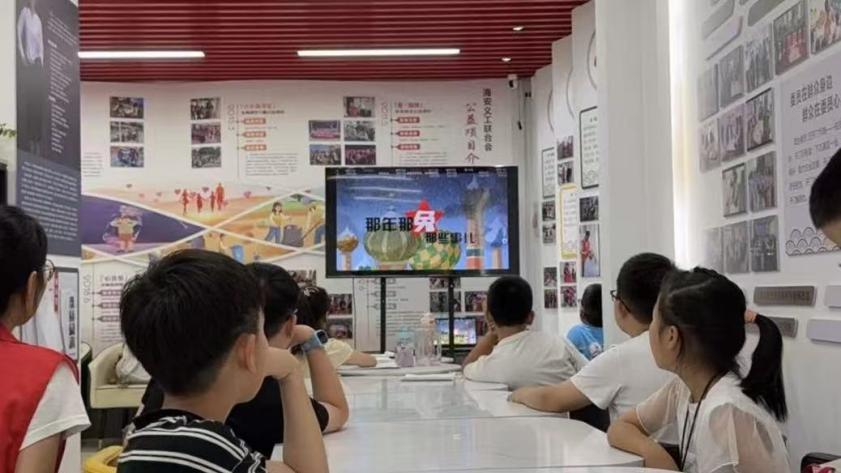

为让乡村少年近距离感受传统戏曲魅力，传承中华优秀传统文化，“惠润乡土，风筑新梦” 实践队走进江苏省盐城市潭庄村新时代文明实践站，面向村内少年儿童开展沉浸式戏曲公益课堂，以趣味表演、手工实践、互动教学相结合的形式，在乡村沃土播撒国粹种子。
活动开始前，实践队员提前布置好课堂，备好戏曲脸谱颜料、空白面具、戏曲皮影、昆曲简易水袖等教具。村里的孩子们早早来到实践站活动室，好奇打量各类戏曲道具，对陌生又精致的传统艺术充满新鲜感。课堂上，队员摒弃枯燥理论讲解，先用通俗易懂的语言科普生、旦、净、丑四大行当，结合经典剧目小故事，为孩子们搭建基础戏曲认知。
随后队员带来简短的昆曲片段表演，灵动舒展的水袖、婉转悠扬的唱腔瞬间抓住孩子们的注意力。台下小朋友目不转睛，时不时发出惊叹，不少孩子主动举手，想要上台模仿简单的戏曲身段、手势。队员耐心手把手教学基础台步、手势，现场一片欢声笑语，原本拘谨的乡村孩童慢慢放开自己，沉浸在戏曲带来的乐趣之中。
理论与表演结束后，最受孩子们喜爱的脸谱手绘体验正式开启。孩子们围坐在长桌前，拿起画笔自由调配色彩，依照自己的理解勾画专属戏曲脸谱。有的孩子对照样板画出红脸忠义关羽，有的大胆搭配撞色，创作独具童趣的创意脸谱。完成作品后，大家纷纷举着自己的画作互相展示，兴奋地分享自己心中戏曲人物的故事。不少陪同前来的家长也驻足观看，称赞这类特色课堂丰富了乡村孩子的课余文化生活。
授课过程中，队员也留意到，乡村儿童日常接触戏曲的机会较少，大多只在电视上零星看过片段，缺少系统性、趣味性的线下体验。结合前期社区实践积累的经验，队员向家长和村干部介绍戏曲 AI 线上平台：今后孩子们不仅能在线下参与实践站戏曲活动，还可借助数字化工具观看卡通戏曲短剧、线上学唱简单唱段，实现线上线下联动学习。

本次潭庄村少儿戏曲课堂，扎根乡村基层文明实践阵地，用低门槛、趣味性的体验消解戏曲与孩童之间的距离。传统戏曲不再是遥远舞台上的艺术，而是能看、能演、能画、能玩的身边乐趣。下一步，实践队将持续联动各村新时代文明实践站，常态化开展少儿戏曲公益课堂，依托数字戏曲平台延伸教学内容，让国粹艺术扎根乡土、滋养乡村少年成长。